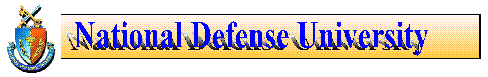
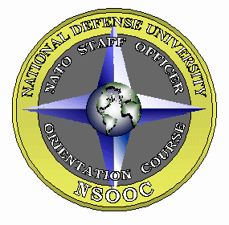

The NATO Staff Officer Orientation Course faculty provides NATO instruction in a variety of ways. NSOOC programs currently consist of a two-week resident course held at National Defense University, outreach instruction tailored to the needs of specific commands or agencies, instruction to both active duty and reserve components, and specialized NATO instruction to allied and Partnership for Peace governments. Please note the summaries below and contact the NSOOC team to assist in your NATO training requirements.
The NATO Staff Officer Orientation resident course is a two-week orientation program conducted at the National Defense University, Ft. L J. McNair, Washington, D.C. The course has a two-phased approach. The first phase consists of intensive instruction in the following subject areas: the Washington Treaty; NATO Headquarters Organization; Allied Command Atlantic Organization; Allied Command Europe Organization; Logistics and Standardization; Strategic Concept; The NATO Staff Environment. The second phase provides a unique opportunity for discussion with senior U.S., allied and Partnership for Peace guest speakers, including representatives from the Joint Staff, OSD, State Department, the Intelligence Community, Capitol Hill, Military Attaches, and Senior Flag and General Officers and diplomats with current or recent NATO experience.
NSOOC's two-week program is designed specifically for U.S. field grade officers enroute to NATO assignments. The objective of the course is to enable the staff officer to become immediately effective in the NATO staff environment. The course is also open to officers, senior non-commissioned officers and civilians assigned to DOD or other U.S. government agencies dealing with issues related to NATO and/or European security. The student becomes conversant with NATO terminology; NATO organization and functions; political, economic, and intercultural aspects of the Alliance; and international staff work.
Condensed presentations regarding NATO, specifically tailored to user needs, are frequently provided to U.S. government agencies and military units, including reserve components. For more information about outreach contact the Course Director.
FY 00 COURSE SCHEDULECOURSE NUMBER / DATES |
|
| A-00 1-00 2-00 3-00 4-00 5-00 6-00 B-00 |
18-19 October 1999 (Two-day
short course) 8-19 November 1999 24 January - 4 February 2000 # 28 February-10 March 2000 1-12 May 2000 5-16 June 2000 * # 17-28 July 2000 # TBD Sept 2000 (Two-day short course) |
Primary (Course Registrar: YN1 Roberts, USN) DSN: 325-3828 Comm (202) 685-3828 e-mail: robertsl@ndu.edu
FAX to any of the NSOOC Staff: DSN 325-3829 or Comm (202) 685-3829
OR
If you have questions regarding NSOOC you can send e-mail directly to us,
just click here: e-mail to NSOOC
Check out these important links!
NATO HQ - Brussels
SACEUR HQ (SHAPE) - Mons, Belgium
NATO's Gopher Site (Database of hundreds of NATO documents)
INSS Homepage
THIS PAGE UPDATED: 5 AUGUST 1999